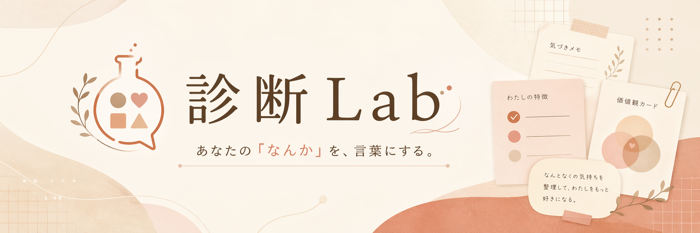

ひとり時間の必要度診断
今どれくらい一人になりたい？

静かになりたい、好きなことに没頭したい、少しだけ離れたい。今のあなたに必要なひとり時間を、軽く見ていく診断です。
12問・4段階で答える診断です
1 / 12
ひとり時間の必要度を整理中…
あなたのひとり時間タイプ
診断結果
あなたへ
今日できる小さなひとり時間
今どれくらい一人になりたい？

静かになりたい、好きなことに没頭したい、少しだけ離れたい。今のあなたに必要なひとり時間を、軽く見ていく診断です。